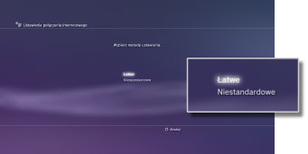
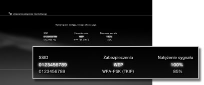
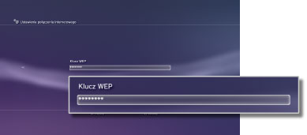

Ustawienia połączenia internetowego (wireless connection)
Ustawienie jest dostępne tylko w konsolach PS3™ wyposażonych w mechanizm obsługi bezprzewodowych sieci LAN.
Wybierz metodę połączenia konsoli z Internetem. Ustawienia połączenia z Internetem różnią się w zależności od środowiska sieciowego i używanych urządzeń. W poniższej procedurze opisano typową konfigurację bezprzewodowego połączenia z Internetem.
1. |
Sprawdź, czy skonfigurowane zostały ustawienia punktu dostępowego.
Sprawdź, czy w pobliżu konsoli znajduje się punkt dostępowy sieci, w której dostępna jest usługa Internetu. Ustawienia punktu dostępowego są zazwyczaj konfigurowane przy użyciu komputera. Szczegółowe informacje na ten temat można uzyskać od osoby, która skonfigurowała lub obsługuje dany punkt dostępowy.
|
2. |
Upewnij się, że kabel Ethernet nie jest podłączony do konsoli PS3™.
|
3. |
Wybierz opcje  (Ustawienia) > (Ustawienia) >  (Ustawienia sieci). (Ustawienia sieci).
|
4. |
Wybierz opcję [Ustawienia połączenia internetowego].
Gdy zostanie wyświetlony ekran z informacją, że użytkownik zostanie odłączony od Internetu, wybierz opcję [Tak].
|
5. |
Wybierz opcję [Łatwe].

|
6. |
Wybierz opcję [Bezprzewodowe].

|
7. |
Wybierz opcję [Wyszukaj].
Zostanie wyświetlona lista punktów dostępowych znajdujących się w zasięgu konsoli PS3™.
W niektórych modelach konsoli PS3™ dostępna jest opcja [Automatycznie]. Wybierz opcję [Automatycznie], jeśli korzystasz z punktu dostępowego obsługującego funkcję automatycznej konfiguracji. Jeśli postąpisz zgodnie z instrukcjami wyświetlanymi na ekranie, wymagane ustawienia zostaną wprowadzone automatycznie. Informacje na temat punktów dostępowych obsługujących automatyczną konfigurację można uzyskać u lokalnego sprzedawcy.

|
8. |
Wybierz pożądany punkt dostępowy.
SSID to nazwy identyfikacyjne nadawane punktom dostępowym. Jeśli nie wiesz, z jakiego identyfikatora SSID należy skorzystać lub identyfikator SSID nie jest wyświetlany, poproś o pomoc osobę, która skonfigurowała lub obsługuje dany punkt dostępowy.

|
9. |
Sprawdź identyfikator SSID punktu dostępowego.
|
10. |
Wybierz odpowiednie ustawienia zabezpieczeń.
Rodzaje ustawień zabezpieczeń różnią się w zależności od punktu dostępowego. W celu uzyskania informacji o ustawieniach zabezpieczeń poproś o pomoc osobę, która skonfigurowała lub obsługuje dany punkt dostępowy.

|
11. |
Wprowadź klucz szyfrowania.
Klucz szyfrowania zostanie wyświetlony jako ciąg gwiazdek [*]. Jeśli nie znasz klucza szyfrowania, poproś o pomoc osobę, która skonfigurowała lub obsługuje dany punkt dostępowy.

Po wprowadzeniu klucza szyfrowania i zatwierdzeniu konfiguracji sieci na ekranie zostanie wyświetlona lista ustawień.
W zależności od środowiska sieciowego mogą być wymagane dodatkowe ustawienia protokołu PPPoE, serwera proxy lub adresu IP. Szczegółowe informacje na temat tych ustawień można uzyskać u dostawcy usług internetowych lub znaleźć w instrukcjach dołączonych do urządzenia sieciowego.
|
12. |
Zapisz ustawienia.
|
13. |
Przetestuj połączenie.
Jeśli wybierzesz opcję [Testuj połączenie], konsola podejmie próbę połączenia się z Internetem.
|
14. |
Sprawdź wyniki testu.
Jeśli udało się nawiązać połączenie, zostaną wyświetlone informacje na temat sieci.
|
Wskazówki
- Jeśli próba nawiązania połączenia się nie powiedzie, postępuj zgodnie z instrukcjami wyświetlanymi na ekranie, aby sprawdzić połączenie. Więcej informacji na ten temat można również uzyskać u dostawcy usług internetowych lub znaleźć w instrukcji dołączonej do urządzenia sieciowego.
- Jeśli w kroku 7. przetestujesz połączenie bezpośrednio po wybraniu opcji [Automatycznie] > [AOSS™], ustawienia routera mogą nie zostać do końca skonfigurowane, w związku z czym nie będzie można nawiązać połączenia. Dlatego przed sprawdzeniem połączenia odczekaj 1–2 minuty.